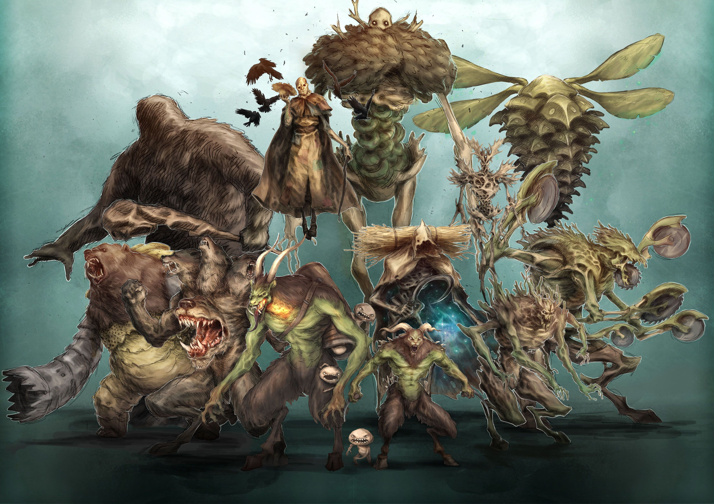
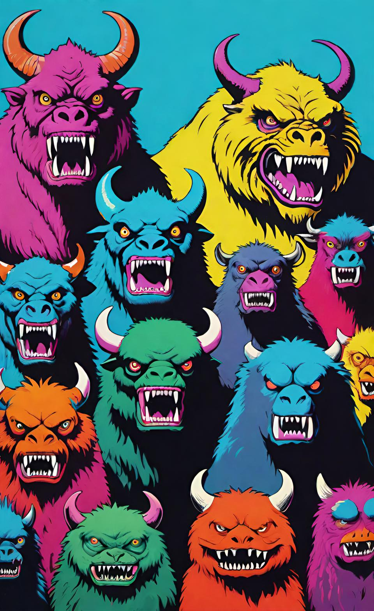
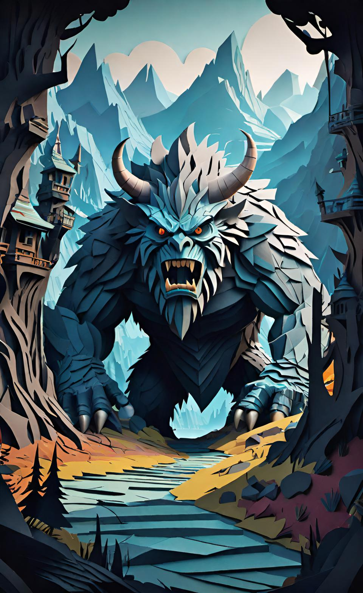
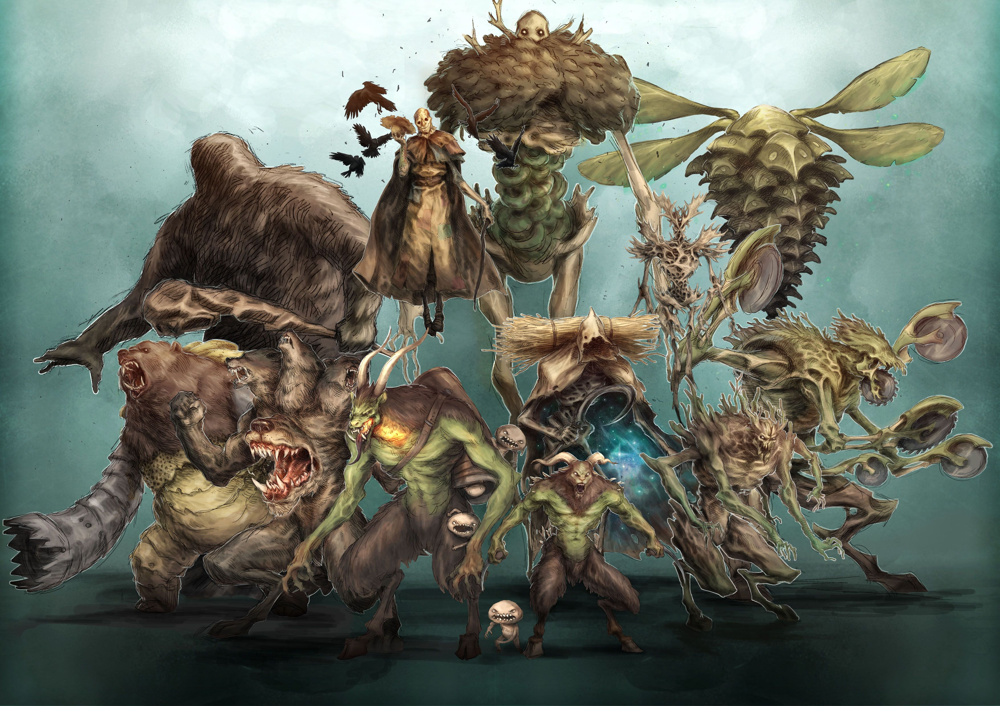
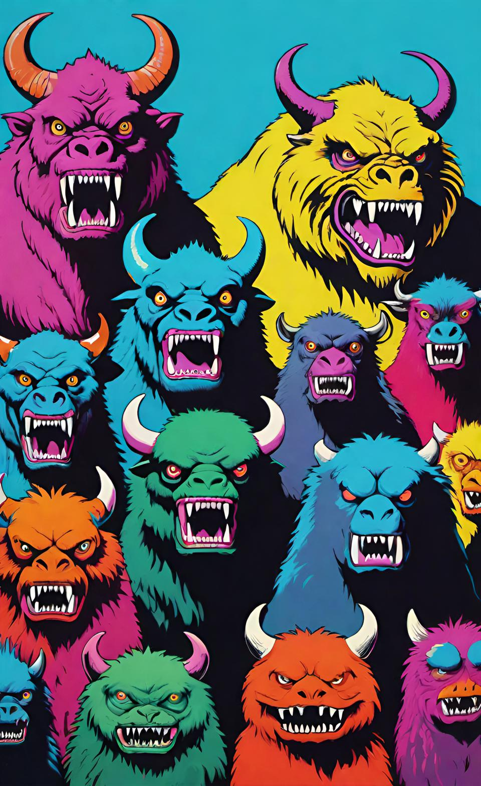
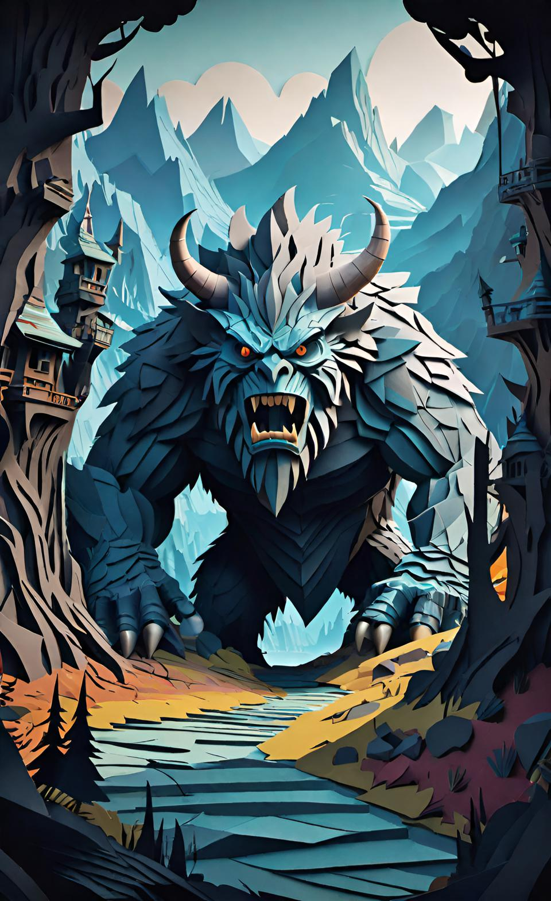

PREV NEXT
Skeleton
Type: undefined
Temper: undefined
Number appearing: 0
Combat Pool: 0
Hit Points: 0
Attack Rank: 0
Defense Rank: 0
Damage Reduction: 0
The Monsters & Creatures Compendium Any (no source link)
The Monsters Know What They're Doing Dungeons And Dragons original/official source
Angry Golem (web) D&D 5e original/official source
OSE Encounter Activity Tables Any original/official source
Pathfinder 1e Bestiary 1 Pathfinder original/official source
Pathfinder 2e Bestiary 1 Pathfinder original/official source
Mythic Adventures Pathfinder original/official source
Monster Manual D&D 5e original/official source
Monster Manual Expanded v1 D&D 5e original/official source
Fifth Edition Foes D&D 5e original/official source
Tome Of Horrors 2018 D&D 5e original/official source
Kobold Press Tome Of Beasts 2 D&D 5e original/official source
Old Gus: Plantfolk, Undead, And Other Oddities D&D 5e original/official source
Limitless Monsters D&D 5e original/official source
Monsters Of Feyland D&D 5e original/official source
Monster Ecology Anthology D&D 5e (no source link)
Monster Manual D&D 4e (no source link)
Monster Manual 2 D&D 4e (no source link)
Dungeons And Dragons Essentials: Monster Vault D&D 4e (no source link)
D&D 2e Monstrous Manual D&D 2e (no source link)
Scruffy Grognard's Monstrous Manual D&D 2e (no source link)
Dragonlance Bestiary SAGA (no source link)
Hacklopedia Of Beasts Hackmaster original/official source
Monsters Compendium Heroes Of Adventure (no source link)
Old World Bestiary Warhammer original/official source
QUERP Bestiary QUERP original/official source
Monsters And Treasure (2019) Castles And Crusades original/official source
The Monster Overhaul OSR (no source link)
Abnormal Undead Any original/official source